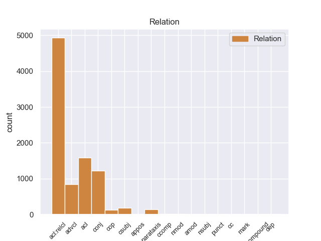
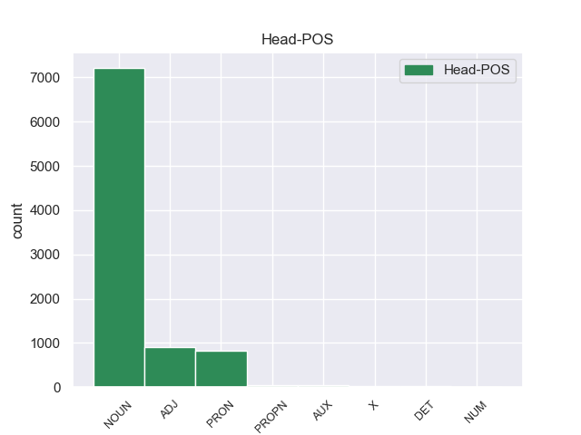
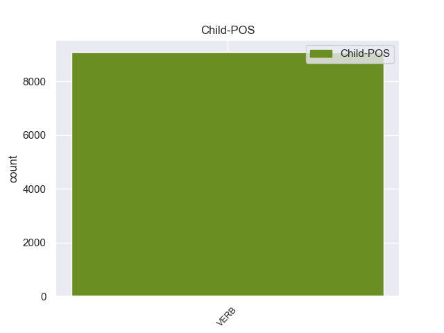

Distribution of features within this leaf



Agreement Rules sorted by frequency.
When the head token is NOUN and the dependent token is VERB.
1 La _ _ _ _ 0 _ _ _
2 película _ _ _ _ 0 _ _ _
3 comienza _ _ _ _ 0 _ _ _
4 con _ _ _ _ 0 _ _ _
5 un _ _ _ _ 0 _ _ _
6 operativo _ _ _ _ 0 _ _ _
7 de _ _ _ _ 0 _ _ _
8 el _ _ _ _ 0 _ _ _
9 FBI _ _ _ _ 0 _ _ _
10 para _ _ _ _ 0 _ _ _
11 capturar _ _ _ _ 0 _ _ _
12 a _ _ _ _ 0 _ _ _
13 un _ _ _ _ 0 _ _ _
14 escurridizo _ _ _ _ 0 _ _ _
15 terrorista terrorista NOUN _ Number=Sing 0 _ _ _
16 conocido conocido VERB _ Gender=Masc|Number=Sing|VerbForm=Part 15 acl _ _
17 internacionalmente _ _ _ _ 0 _ _ _
18 llamado _ _ _ _ 0 _ _ _
19 Miles _ _ _ _ 0 _ _ _
20 Jackson _ _ _ _ 0 _ _ _
21 ( _ _ _ _ 0 _ _ _
22 Aidan _ _ _ _ 0 _ _ _
23 Gillen _ _ _ _ 0 _ _ _
24 ) _ _ _ _ 0 _ _ _
25 . _ _ _ _ 0 _ _ _
When the head token is NOUN and the dependent token is VERB. and the head token is ADJ and the dependent token is VERB.
1 De _ _ _ _ 0 _ _ _
2 los _ _ _ _ 0 _ _ _
3 1500 _ _ _ _ 0 _ _ _
4 habitantes _ _ _ _ 0 _ _ _
5 , _ _ _ _ 0 _ _ _
6 el _ _ _ _ 0 _ _ _
7 municipio _ _ _ _ 0 _ _ _
8 de _ _ _ _ 0 _ _ _
9 Lincoln _ _ _ _ 0 _ _ _
10 estaba _ _ _ _ 0 _ _ _
11 compuesto _ _ _ _ 0 _ _ _
12 por _ _ _ _ 0 _ _ _
13 el _ _ _ _ 0 _ _ _
14 97.6 _ _ _ _ 0 _ _ _
15 % _ _ _ _ 0 _ _ _
16 blancos _ _ _ _ 0 _ _ _
17 , _ _ _ _ 0 _ _ _
18 el _ _ _ _ 0 _ _ _
19 0.53 _ _ _ _ 0 _ _ _
20 % _ _ _ _ 0 _ _ _
21 eran _ _ _ _ 0 _ _ _
22 afroamericanos afroamericano ADJ _ Gender=Masc|Number=Plur 0 _ _ _
23 , _ _ _ _ 0 _ _ _
24 el _ _ _ _ 0 _ _ _
25 0.33 _ _ _ _ 0 _ _ _
26 % _ _ _ _ 0 _ _ _
27 eran _ _ _ _ 0 _ _ _
28 amerindios _ _ _ _ 0 _ _ _
29 , _ _ _ _ 0 _ _ _
30 el _ _ _ _ 0 _ _ _
31 0.27 _ _ _ _ 0 _ _ _
32 % _ _ _ _ 0 _ _ _
33 eran _ _ _ _ 0 _ _ _
34 asiáticos _ _ _ _ 0 _ _ _
35 , _ _ _ _ 0 _ _ _
36 el _ _ _ _ 0 _ _ _
37 0 _ _ _ _ 0 _ _ _
38 % _ _ _ _ 0 _ _ _
39 eran _ _ _ _ 0 _ _ _
40 isleños _ _ _ _ 0 _ _ _
41 de _ _ _ _ 0 _ _ _
42 el _ _ _ _ 0 _ _ _
43 Pacífico _ _ _ _ 0 _ _ _
44 , _ _ _ _ 0 _ _ _
45 el _ _ _ _ 0 _ _ _
46 0.07 _ _ _ _ 0 _ _ _
47 % _ _ _ _ 0 _ _ _
48 eran _ _ _ _ 0 _ _ _
49 de _ _ _ _ 0 _ _ _
50 otras _ _ _ _ 0 _ _ _
51 razas _ _ _ _ 0 _ _ _
52 y _ _ _ _ 0 _ _ _
53 el _ _ _ _ 0 _ _ _
54 1.2 _ _ _ _ 0 _ _ _
55 % _ _ _ _ 0 _ _ _
56 pertenecían pertenecer VERB _ Mood=Ind|Number=Plur|Person=3|Tense=Imp|VerbForm=Fin 22 conj _ _
57 a _ _ _ _ 0 _ _ _
58 dos _ _ _ _ 0 _ _ _
59 o _ _ _ _ 0 _ _ _
60 más _ _ _ _ 0 _ _ _
61 razas _ _ _ _ 0 _ _ _
62 . _ _ _ _ 0 _ _ _
When the head token is NOUN and the dependent token is VERB. and the head token is ADJ and the dependent token is VERB. and the head token is PRON and the dependent token is VERB.
1 Es _ _ _ _ 0 _ _ _
2 uno uno PRON _ Gender=Masc|Number=Sing|PronType=Ind 0 _ _ _
3 de _ _ _ _ 0 _ _ _
4 los _ _ _ _ 0 _ _ _
5 212 _ _ _ _ 0 _ _ _
6 municipios _ _ _ _ 0 _ _ _
7 de _ _ _ _ 0 _ _ _
8 la _ _ _ _ 0 _ _ _
9 entidad _ _ _ _ 0 _ _ _
10 y _ _ _ _ 0 _ _ _
11 tiene tener VERB _ Mood=Ind|Number=Sing|Person=3|Tense=Pres|VerbForm=Fin 2 conj _ _
12 su _ _ _ _ 0 _ _ _
13 ubicación _ _ _ _ 0 _ _ _
14 en _ _ _ _ 0 _ _ _
15 la _ _ _ _ 0 _ _ _
16 región _ _ _ _ 0 _ _ _
17 montañosa _ _ _ _ 0 _ _ _
18 de _ _ _ _ 0 _ _ _
19 la _ _ _ _ 0 _ _ _
20 zona _ _ _ _ 0 _ _ _
21 centro _ _ _ _ 0 _ _ _
22 de _ _ _ _ 0 _ _ _
23 el _ _ _ _ 0 _ _ _
24 estado _ _ _ _ 0 _ _ _
25 . _ _ _ _ 0 _ _ _
When the head token is NOUN and the dependent token is VERB. and the head token is ADJ and the dependent token is VERB. and the head token is PRON and the dependent token is VERB. and the head token is PROPN and the dependent token is VERB.
1 La _ _ _ _ 0 _ _ _
2 totalidad _ _ _ _ 0 _ _ _
3 de _ _ _ _ 0 _ _ _
4 los _ _ _ _ 0 _ _ _
5 libros _ _ _ _ 0 _ _ _
6 de _ _ _ _ 0 _ _ _
7 cuentos _ _ _ _ 0 _ _ _
8 , _ _ _ _ 0 _ _ _
9 y _ _ _ _ 0 _ _ _
10 casi _ _ _ _ 0 _ _ _
11 todas _ _ _ _ 0 _ _ _
12 sus _ _ _ _ 0 _ _ _
13 novelas _ _ _ _ 0 _ _ _
14 ( _ _ _ _ 0 _ _ _
15 salvo _ _ _ _ 0 _ _ _
16 La _ _ _ _ 0 _ _ _
17 literatura literatura PROPN _ Gender=Fem|Number=Sing 0 _ _ _
18 nazi _ _ _ _ 0 _ _ _
19 en _ _ _ _ 0 _ _ _
20 América _ _ _ _ 0 _ _ _
21 , _ _ _ _ 0 _ _ _
22 publicada publicado VERB _ Gender=Fem|Number=Sing|VerbForm=Part 17 acl _ _
23 por _ _ _ _ 0 _ _ _
24 la _ _ _ _ 0 _ _ _
25 editorial _ _ _ _ 0 _ _ _
26 Seix _ _ _ _ 0 _ _ _
27 Barral _ _ _ _ 0 _ _ _
28 , _ _ _ _ 0 _ _ _
29 y _ _ _ _ 0 _ _ _
30 Consejos _ _ _ _ 0 _ _ _
31 de _ _ _ _ 0 _ _ _
32 un _ _ _ _ 0 _ _ _
33 discípulo _ _ _ _ 0 _ _ _
34 ... _ _ _ _ 0 _ _ _
35 , _ _ _ _ 0 _ _ _
36 reeditada _ _ _ _ 0 _ _ _
37 por _ _ _ _ 0 _ _ _
38 la _ _ _ _ 0 _ _ _
39 Editorial _ _ _ _ 0 _ _ _
40 Acantilado _ _ _ _ 0 _ _ _
41 ) _ _ _ _ 0 _ _ _
42 , _ _ _ _ 0 _ _ _
43 fue _ _ _ _ 0 _ _ _
44 publicada _ _ _ _ 0 _ _ _
45 por _ _ _ _ 0 _ _ _
46 Anagrama _ _ _ _ 0 _ _ _
47 . _ _ _ _ 0 _ _ _
When the head token is NOUN and the dependent token is VERB. and the head token is ADJ and the dependent token is VERB. and the head token is PRON and the dependent token is VERB. and the head token is PROPN and the dependent token is VERB. and the head token is AUX and the dependent token is VERB.
1 La _ _ _ _ 0 _ _ _
2 razón _ _ _ _ 0 _ _ _
3 de _ _ _ _ 0 _ _ _
4 ello _ _ _ _ 0 _ _ _
5 es ser AUX _ Mood=Ind|Number=Sing|Person=3|Tense=Pres|VerbForm=Fin 0 _ _ _
6 que _ _ _ _ 0 _ _ _
7 en _ _ _ _ 0 _ _ _
8 el _ _ _ _ 0 _ _ _
9 discurso _ _ _ _ 0 _ _ _
10 que _ _ _ _ 0 _ _ _
11 pronunció _ _ _ _ 0 _ _ _
12 con _ _ _ _ 0 _ _ _
13 motivo _ _ _ _ 0 _ _ _
14 de _ _ _ _ 0 _ _ _
15 el _ _ _ _ 0 _ _ _
16 nuevo _ _ _ _ 0 _ _ _
17 milenio _ _ _ _ 0 _ _ _
18 se _ _ _ _ 0 _ _ _
19 atrevió atrevir VERB _ Mood=Ind|Number=Sing|Person=3|Tense=Past|VerbForm=Fin 5 ccomp _ _
20 a _ _ _ _ 0 _ _ _
21 plantear _ _ _ _ 0 _ _ _
22 el _ _ _ _ 0 _ _ _
23 problema _ _ _ _ 0 _ _ _
24 de _ _ _ _ 0 _ _ _
25 la _ _ _ _ 0 _ _ _
26 sucesión _ _ _ _ 0 _ _ _
27 de _ _ _ _ 0 _ _ _
28 el _ _ _ _ 0 _ _ _
29 Rey _ _ _ _ 0 _ _ _
30 Sihanuk _ _ _ _ 0 _ _ _
31 , _ _ _ _ 0 _ _ _
32 exigiendo _ _ _ _ 0 _ _ _
33 que _ _ _ _ 0 _ _ _
34 se _ _ _ _ 0 _ _ _
35 esclareciera _ _ _ _ 0 _ _ _
36 el _ _ _ _ 0 _ _ _
37 procedimiento _ _ _ _ 0 _ _ _
38 que _ _ _ _ 0 _ _ _
39 ha _ _ _ _ 0 _ _ _
40 de _ _ _ _ 0 _ _ _
41 seguir _ _ _ _ 0 _ _ _
42 se _ _ _ _ 0 _ _ _
43 en _ _ _ _ 0 _ _ _
44 caso _ _ _ _ 0 _ _ _
45 de _ _ _ _ 0 _ _ _
46 que _ _ _ _ 0 _ _ _
47 fallezca _ _ _ _ 0 _ _ _
48 . _ _ _ _ 0 _ _ _
When the head token is NOUN and the dependent token is VERB. and the head token is ADJ and the dependent token is VERB. and the head token is PRON and the dependent token is VERB. and the head token is PROPN and the dependent token is VERB. and the head token is AUX and the dependent token is VERB. and the head token is DET and the dependent token is VERB.
1 El _ _ _ _ 0 _ _ _
2 reconocimiento _ _ _ _ 0 _ _ _
3 internacional _ _ _ _ 0 _ _ _
4 de _ _ _ _ 0 _ _ _
5 Kalatózov _ _ _ _ 0 _ _ _
6 llegó _ _ _ _ 0 _ _ _
7 con _ _ _ _ 0 _ _ _
8 el _ _ _ _ 0 _ _ _
9 estreno _ _ _ _ 0 _ _ _
10 de _ _ _ _ 0 _ _ _
11 el _ _ _ _ 0 _ _ _
12 melodrama _ _ _ _ 0 _ _ _
13 Cuando _ _ _ _ 0 _ _ _
14 pasan pasar VERB _ Mood=Ind|Number=Plur|Person=3|Tense=Pres|VerbForm=Fin 15 compound _ _
15 las el DET _ Definite=Def|Gender=Fem|Number=Plur|PronType=Art 0 _ _ _
16 cigüeñas _ _ _ _ 0 _ _ _
17 ( _ _ _ _ 0 _ _ _
18 Letyat _ _ _ _ 0 _ _ _
19 zhuravlí _ _ _ _ 0 _ _ _
20 , _ _ _ _ 0 _ _ _
21 1957 _ _ _ _ 0 _ _ _
22 ) _ _ _ _ 0 _ _ _
23 considerada _ _ _ _ 0 _ _ _
24 la _ _ _ _ 0 _ _ _
25 primera _ _ _ _ 0 _ _ _
26 de _ _ _ _ 0 _ _ _
27 sus _ _ _ _ 0 _ _ _
28 obras _ _ _ _ 0 _ _ _
29 maestras _ _ _ _ 0 _ _ _
30 y _ _ _ _ 0 _ _ _
31 uno _ _ _ _ 0 _ _ _
32 de _ _ _ _ 0 _ _ _
33 los _ _ _ _ 0 _ _ _
34 hitos _ _ _ _ 0 _ _ _
35 de _ _ _ _ 0 _ _ _
36 el _ _ _ _ 0 _ _ _
37 cine _ _ _ _ 0 _ _ _
38 soviético _ _ _ _ 0 _ _ _
39 . _ _ _ _ 0 _ _ _
When the head token is NOUN and the dependent token is VERB. and the head token is ADJ and the dependent token is VERB. and the head token is PRON and the dependent token is VERB. and the head token is PROPN and the dependent token is VERB. and the head token is AUX and the dependent token is VERB. and the head token is DET and the dependent token is VERB. and the head token is X and the dependent token is VERB.
1 Gravestone _ _ _ _ 0 _ _ _
2 puede _ _ _ _ 0 _ _ _
3 realzar _ _ _ _ 0 _ _ _
4 se _ _ _ _ 0 _ _ _
5 mas _ _ _ _ 0 _ _ _
6 si _ _ _ _ 0 _ _ _
7 se _ _ _ _ 0 _ _ _
8 inyecta _ _ _ _ 0 _ _ _
9 stimulii stimulii X _ Gender=Masc|Number=Sing 0 _ _ _
10 , _ _ _ _ 0 _ _ _
11 como _ _ _ _ 0 _ _ _
12 electricidad _ _ _ _ 0 _ _ _
13 , _ _ _ _ 0 _ _ _
14 el _ _ _ _ 0 _ _ _
15 cual _ _ _ _ 0 _ _ _
16 sobrecarga sobrecargar VERB _ Mood=Ind|Number=Sing|Person=3|Tense=Pres|VerbForm=Fin 9 acl:relcl _ _
17 sus _ _ _ _ 0 _ _ _
18 sistema _ _ _ _ 0 _ _ _
19 explotando _ _ _ _ 0 _ _ _
20 sus _ _ _ _ 0 _ _ _
21 músculos _ _ _ _ 0 _ _ _
22 y _ _ _ _ 0 _ _ _
23 apagando _ _ _ _ 0 _ _ _
24 sus _ _ _ _ 0 _ _ _
25 funciones _ _ _ _ 0 _ _ _
26 cognoscitivas _ _ _ _ 0 _ _ _
27 , _ _ _ _ 0 _ _ _
28 cuando _ _ _ _ 0 _ _ _
29 se _ _ _ _ 0 _ _ _
30 sobrecarga _ _ _ _ 0 _ _ _
31 es _ _ _ _ 0 _ _ _
32 virtualmente _ _ _ _ 0 _ _ _
33 imparable _ _ _ _ 0 _ _ _
34 , _ _ _ _ 0 _ _ _
35 y _ _ _ _ 0 _ _ _
36 es _ _ _ _ 0 _ _ _
37 mejor _ _ _ _ 0 _ _ _
38 evitar _ _ _ _ 0 _ _ _
39 lo _ _ _ _ 0 _ _ _
40 , _ _ _ _ 0 _ _ _
41 cual _ _ _ _ 0 _ _ _
42 , _ _ _ _ 0 _ _ _
43 siendo _ _ _ _ 0 _ _ _
44 que _ _ _ _ 0 _ _ _
45 él _ _ _ _ 0 _ _ _
46 fue _ _ _ _ 0 _ _ _
47 mejorado _ _ _ _ 0 _ _ _
48 en _ _ _ _ 0 _ _ _
49 velocidad _ _ _ _ 0 _ _ _
50 y _ _ _ _ 0 _ _ _
51 destreza _ _ _ _ 0 _ _ _
52 , _ _ _ _ 0 _ _ _
53 es _ _ _ _ 0 _ _ _
54 una _ _ _ _ 0 _ _ _
55 bestia _ _ _ _ 0 _ _ _
56 y _ _ _ _ 0 _ _ _
57 en _ _ _ _ 0 _ _ _
58 mayor _ _ _ _ 0 _ _ _
59 parte _ _ _ _ 0 _ _ _
60 de _ _ _ _ 0 _ _ _
61 los _ _ _ _ 0 _ _ _
62 casos _ _ _ _ 0 _ _ _
63 fatal _ _ _ _ 0 _ _ _
64 como _ _ _ _ 0 _ _ _
65 el _ _ _ _ 0 _ _ _
66 Dr. _ _ _ _ 0 _ _ _
67 Nagata _ _ _ _ 0 _ _ _
68 . _ _ _ _ 0 _ _ _
When the head token is NOUN and the dependent token is VERB. and the head token is ADJ and the dependent token is VERB. and the head token is PRON and the dependent token is VERB. and the head token is PROPN and the dependent token is VERB. and the head token is AUX and the dependent token is VERB. and the head token is DET and the dependent token is VERB. and the head token is X and the dependent token is VERB. and the head token is NUM and the dependent token is VERB.
1 Estas _ _ _ _ 0 _ _ _
2 alegaciones _ _ _ _ 0 _ _ _
3 han _ _ _ _ 0 _ _ _
4 sido _ _ _ _ 0 _ _ _
5 presentadas _ _ _ _ 0 _ _ _
6 mayoritariamente _ _ _ _ 0 _ _ _
7 por _ _ _ _ 0 _ _ _
8 agentes _ _ _ _ 0 _ _ _
9 sociales _ _ _ _ 0 _ _ _
10 , _ _ _ _ 0 _ _ _
11 que _ _ _ _ 0 _ _ _
12 han _ _ _ _ 0 _ _ _
13 aportado _ _ _ _ 0 _ _ _
14 siete siete NUM _ Number=Plur|NumType=Card 0 _ _ _
15 , _ _ _ _ 0 _ _ _
16 seguidas seguido VERB _ Gender=Fem|Number=Plur|VerbForm=Part 14 acl _ _
17 de _ _ _ _ 0 _ _ _
18 las _ _ _ _ 0 _ _ _
19 seis _ _ _ _ 0 _ _ _
20 de _ _ _ _ 0 _ _ _
21 asociaciones _ _ _ _ 0 _ _ _
22 de _ _ _ _ 0 _ _ _
23 regantes _ _ _ _ 0 _ _ _
24 , _ _ _ _ 0 _ _ _
25 el _ _ _ _ 0 _ _ _
26 mismo _ _ _ _ 0 _ _ _
27 número _ _ _ _ 0 _ _ _
28 que _ _ _ _ 0 _ _ _
29 las _ _ _ _ 0 _ _ _
30 presentadas _ _ _ _ 0 _ _ _
31 por _ _ _ _ 0 _ _ _
32 las _ _ _ _ 0 _ _ _
33 administraciones _ _ _ _ 0 _ _ _
34 . _ _ _ _ 0 _ _ _
Disagree Examples:
1 Las _ _ _ _ 0 _ _ _
2 enmiendas _ _ _ _ 0 _ _ _
3 4 _ _ _ _ 0 _ _ _
4 y _ _ _ _ 0 _ _ _
5 5 _ _ _ _ 0 _ _ _
6 también _ _ _ _ 0 _ _ _
7 son _ _ _ _ 0 _ _ _
8 inaceptables _ _ _ _ 0 _ _ _
9 , _ _ _ _ 0 _ _ _
10 porque _ _ _ _ 0 _ _ _
11 conceden _ _ _ _ 0 _ _ _
12 una _ _ _ _ 0 _ _ _
13 preferencia _ _ _ _ 0 _ _ _
14 innecesaria _ _ _ _ 0 _ _ _
15 a _ _ _ _ 0 _ _ _
16 la _ _ _ _ 0 _ _ _
17 copia _ _ _ _ 0 _ _ _
18 de _ _ _ _ 0 _ _ _
19 productos _ _ _ _ 0 _ _ _
20 , _ _ _ _ 0 _ _ _
21 otorgándo _ _ _ _ 0 _ _ _
22 les _ _ _ _ 0 _ _ _
23 la _ _ _ _ 0 _ _ _
24 autorización _ _ _ _ 0 _ _ _
25 para _ _ _ _ 0 _ _ _
26 ser _ _ _ _ 0 _ _ _
27 puestos puesto NOUN _ Gender=Masc|Number=Plur 0 _ _ _
28 en _ _ _ _ 0 _ _ _
29 circulación _ _ _ _ 0 _ _ _
30 incluso _ _ _ _ 0 _ _ _
31 antes _ _ _ _ 0 _ _ _
32 de _ _ _ _ 0 _ _ _
33 haber _ _ _ _ 0 _ _ _
34 presentado presentar VERB _ Gender=Masc|Number=Sing|Tense=Past|VerbForm=Part 27 advcl _ _
35 la _ _ _ _ 0 _ _ _
36 solicitud _ _ _ _ 0 _ _ _
37 de _ _ _ _ 0 _ _ _
38 autorización _ _ _ _ 0 _ _ _
39 . _ _ _ _ 0 _ _ _
1 Hemos _ _ _ _ 0 _ _ _
2 venido _ _ _ _ 0 _ _ _
3 cumpliendo _ _ _ _ 0 _ _ _
4 en _ _ _ _ 0 _ _ _
5 el _ _ _ _ 0 _ _ _
6 ámbito _ _ _ _ 0 _ _ _
7 de _ _ _ _ 0 _ _ _
8 la _ _ _ _ 0 _ _ _
9 Unión _ _ _ _ 0 _ _ _
10 Europea _ _ _ _ 0 _ _ _
11 todo _ _ _ _ 0 _ _ _
12 el _ _ _ _ 0 _ _ _
13 conjunto conjunto NOUN _ Gender=Masc|Number=Sing 0 _ _ _
14 de _ _ _ _ 0 _ _ _
15 requisitos _ _ _ _ 0 _ _ _
16 que _ _ _ _ 0 _ _ _
17 permiten permitir VERB _ Mood=Ind|Number=Plur|Person=3|Tense=Pres|VerbForm=Fin 13 acl:relcl _ _
18 a _ _ _ _ 0 _ _ _
19 Austria _ _ _ _ 0 _ _ _
20 cumplir _ _ _ _ 0 _ _ _
21 y _ _ _ _ 0 _ _ _
22 participar _ _ _ _ 0 _ _ _
23 plenamente _ _ _ _ 0 _ _ _
24 en _ _ _ _ 0 _ _ _
25 las _ _ _ _ 0 _ _ _
26 instituciones _ _ _ _ 0 _ _ _
27 europeas _ _ _ _ 0 _ _ _
28 y _ _ _ _ 0 _ _ _
29 en _ _ _ _ 0 _ _ _
30 su _ _ _ _ 0 _ _ _
31 funcionamiento _ _ _ _ 0 _ _ _
32 . _ _ _ _ 0 _ _ _
1 Señor _ _ _ _ 0 _ _ _
2 Presidente _ _ _ _ 0 _ _ _
3 , _ _ _ _ 0 _ _ _
4 estoy _ _ _ _ 0 _ _ _
5 de _ _ _ _ 0 _ _ _
6 acuerdo _ _ _ _ 0 _ _ _
7 con _ _ _ _ 0 _ _ _
8 el _ _ _ _ 0 _ _ _
9 ponente _ _ _ _ 0 _ _ _
10 en _ _ _ _ 0 _ _ _
11 las _ _ _ _ 0 _ _ _
12 cuestiones cuestión NOUN _ Gender=Fem|Number=Plur 0 _ _ _
13 fundamentales _ _ _ _ 0 _ _ _
14 que _ _ _ _ 0 _ _ _
15 plantea planteo VERB _ Mood=Sub|Number=Sing|Person=3|Tense=Pres|VerbForm=Fin 12 acl:relcl _ _
16 y _ _ _ _ 0 _ _ _
17 , _ _ _ _ 0 _ _ _
18 naturalmente _ _ _ _ 0 _ _ _
19 , _ _ _ _ 0 _ _ _
20 puedo _ _ _ _ 0 _ _ _
21 apoyar _ _ _ _ 0 _ _ _
22 de _ _ _ _ 0 _ _ _
23 buen _ _ _ _ 0 _ _ _
24 grado _ _ _ _ 0 _ _ _
25 la _ _ _ _ 0 _ _ _
26 enmienda _ _ _ _ 0 _ _ _
27 que _ _ _ _ 0 _ _ _
28 propone _ _ _ _ 0 _ _ _
29 que _ _ _ _ 0 _ _ _
30 el _ _ _ _ 0 _ _ _
31 período _ _ _ _ 0 _ _ _
32 de _ _ _ _ 0 _ _ _
33 transición _ _ _ _ 0 _ _ _
34 sea _ _ _ _ 0 _ _ _
35 solamente _ _ _ _ 0 _ _ _
36 de _ _ _ _ 0 _ _ _
37 dos _ _ _ _ 0 _ _ _
38 años _ _ _ _ 0 _ _ _
39 . _ _ _ _ 0 _ _ _
1 Hemos _ _ _ _ 0 _ _ _
2 de _ _ _ _ 0 _ _ _
3 recordar _ _ _ _ 0 _ _ _
4 que _ _ _ _ 0 _ _ _
5 nosotros _ _ _ _ 0 _ _ _
6 , _ _ _ _ 0 _ _ _
7 la _ _ _ _ 0 _ _ _
8 Unión _ _ _ _ 0 _ _ _
9 Europea _ _ _ _ 0 _ _ _
10 , _ _ _ _ 0 _ _ _
11 somos _ _ _ _ 0 _ _ _
12 una _ _ _ _ 0 _ _ _
13 unión unión NOUN _ Gender=Fem|Number=Sing 0 _ _ _
14 de _ _ _ _ 0 _ _ _
15 minorías _ _ _ _ 0 _ _ _
16 : _ _ _ _ 0 _ _ _
17 todos _ _ _ _ 0 _ _ _
18 nosotros _ _ _ _ 0 _ _ _
19 somos somo VERB _ Mood=Ind|Number=Plur|Person=1|Tense=Pres|VerbForm=Fin 13 acl _ _
20 una _ _ _ _ 0 _ _ _
21 minoría _ _ _ _ 0 _ _ _
22 en _ _ _ _ 0 _ _ _
23 Europa _ _ _ _ 0 _ _ _
24 . _ _ _ _ 0 _ _ _
1 En _ _ _ _ 0 _ _ _
2 segundo _ _ _ _ 0 _ _ _
3 lugar _ _ _ _ 0 _ _ _
4 , _ _ _ _ 0 _ _ _
5 en _ _ _ _ 0 _ _ _
6 la _ _ _ _ 0 _ _ _
7 legislatura legislatura NOUN _ Gender=Fem|Number=Sing 0 _ _ _
8 anterior _ _ _ _ 0 _ _ _
9 remitimos remitir VERB _ Mood=Ind|Number=Plur|Person=1|Tense=Past|VerbForm=Fin 7 acl _ _
10 a _ _ _ _ 0 _ _ _
11 la _ _ _ _ 0 _ _ _
12 justicia _ _ _ _ 0 _ _ _
13 las _ _ _ _ 0 _ _ _
14 irregularidades _ _ _ _ 0 _ _ _
15 punibles _ _ _ _ 0 _ _ _
16 en _ _ _ _ 0 _ _ _
17 una _ _ _ _ 0 _ _ _
18 demostración _ _ _ _ 0 _ _ _
19 de _ _ _ _ 0 _ _ _
20 firmeza _ _ _ _ 0 _ _ _
21 sin _ _ _ _ 0 _ _ _
22 precedentes _ _ _ _ 0 _ _ _
23 . _ _ _ _ 0 _ _ _